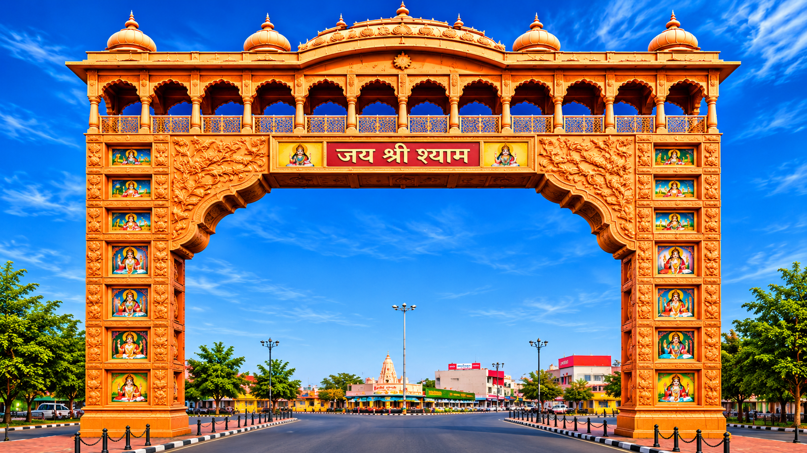

Jai Shree Shyam
Jai Shree Shyam
सहयोगसेवासमर्पण
Shree Shyam Jagat is a platform dedicated to spreading devotion and serving humanity

Shree Shyam Jagat is a platform dedicated to spreading devotion and serving humanity